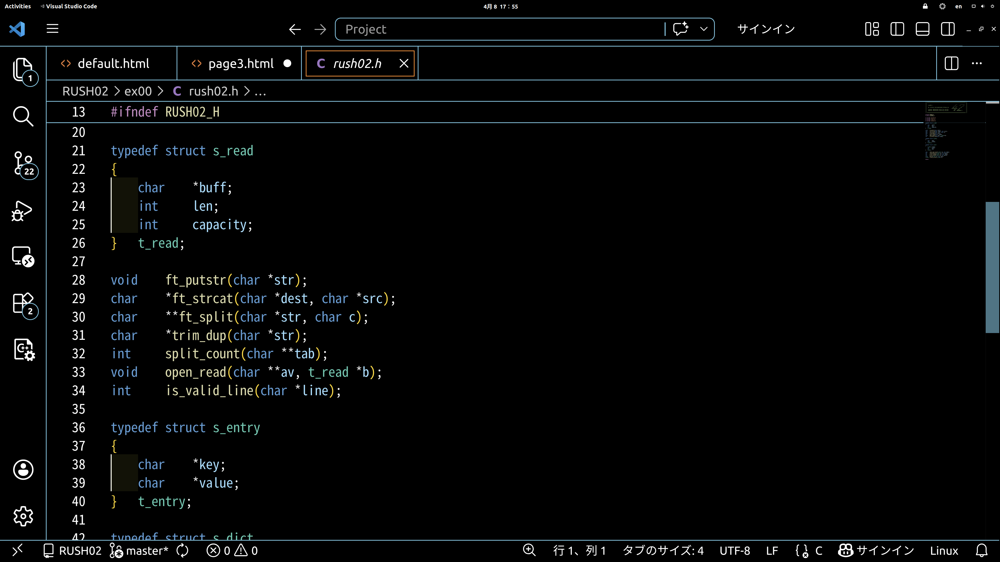

これはRUSH02課題で使用する構造体の内容です。
課題で必要となるあらゆる構造体を説明していきます。
構造体を実装する際の注意や最適化のポイントを提示していきます。
今までは1つのデータ型を宣言してデータを扱っていたと思います。今回紹介する構造体は新しいデータ型を定義して、複数の変数を扱う方法になります。

typedef structでデータ型を定義しています、t_readと置くことでint,charと同じようにt_readと書くだけで宣言ができます。
この中でそれぞれの変数を宣言すれば、それをまとめて扱うことができます